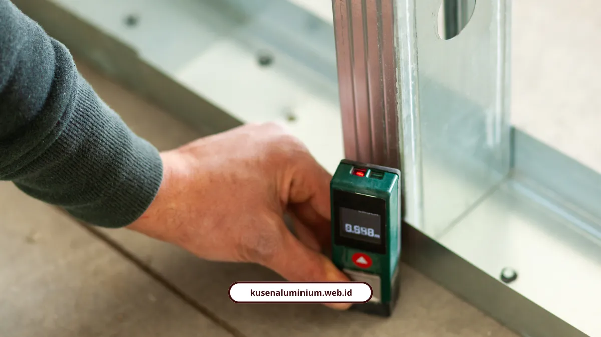

Fabrikasi Kusen Presisi, Anti Renggang dan Bocor

📌 Ringkasan Inti
Fabrikasi kusen presisi menerapkan pengukuran 3 titik di setiap bukaan dinding, toleransi celah 5 mm khusus untuk alur sealant silikon, serta pemotongan sambungan sudut kedap udara menggunakan mesin potong double miter saw modern:
- Pengukuran 3 titik pada tinggi dan lebar dinding memastikan ukuran terkecil dijadikan acuan sehingga kusen tidak terjepit saat dipasang.
- Celah toleransi 5 mm di sekeliling kusen merupakan ruang ekspansi terencana agar sealant silikon cuaca bekerja maksimal mencegah rembesan air hujan.
- Mesin double miter saw memotong sudut 45 derajat secara simultan dengan akurasi 0,5 mm untuk hasil sambungan sudut miter rapat dan kedap udara.
- Tersedia perbandingan spesifikasi antara profil Alexindo yang ekonomis untuk rumah tinggal dan YKK AP dengan gasket EPDM multi-seal untuk hunian mewah.
- Waktu pengerjaan dari workshop sampai instalasi selesai hanya memerlukan waktu 2 sampai 5 hari kerja dengan estimasi biaya transparan.
- Kenapa Pengukuran 3 Titik Itu Penting untuk Kusen?
- YKK AP atau Alexindo, Mana yang Lebih Cocok?
- Apakah Kusen Aluminium Tahan dengan Cuaca Surabaya yang Panas dan Lembap?
- Berapa Kisaran Harga dan Waktu Pengerjaannya?
- Bagaimana Kusen Ini Dikirim Sampai Lokasi Proyek?
- Presisi Menentukan Daya Tahan Kusen Jangka Panjang
Fabrikasi kusen presisi kami menerapkan pengukuran 3 titik, toleransi celah 5 mm untuk sealant, dan sambungan sudut kedap udara memakai mesin potong double miter saw.
Kusen yang miring sedikit saja bisa bikin AC boros dan air hujan rembes pelan-pelan tanpa disadari. Kelihatannya sepele, tapi ini masalah paling sering saya temui di proyek-proyek Surabaya Raya yang kusennya dipasang asal cepat tanpa pengukuran yang benar.
Kenapa Pengukuran 3 Titik Itu Penting untuk Kusen?
Karena dinding rumah jarang benar-benar lurus, jadi pengukuran harus dilakukan di tiga titik berbeda supaya kusen tidak sesak atau malah terlalu longgar.
Standar yang kami pakai:
- Ukur lebar di tiga titik: atas, tengah, bawah
- Ukur tinggi di tiga titik: kiri, kanan, tengah
- Ukuran terkecil dipakai sebagai acuan utama
- Gunakan meteran laser atau meteran gulung presisi
"Kesalahan sekecil apa pun dalam pengukuran bisa menyebabkan celah udara, kebocoran air, atau tampilan yang tidak simetris. Jangan lupa sisakan celah ±5 mm di setiap sisi untuk toleransi pemasangan dan sealant."
Celah toleransi 5 mm ini bukan cacat produksi, justru itu ruang yang sengaja disisakan supaya sealant bisa bekerja maksimal mencegah kebocoran.
Standar fabrikasi ini yang kami pakai konsisten di semua proyek, sebagaimana dijelaskan juga di halaman jasa kusen aluminium melayani Surabaya.

YKK AP atau Alexindo, Mana yang Lebih Cocok?
Alexindo lebih ekonomis dan andal untuk rumah standar, sementara YKK AP unggul di kekedapan cuaca dan desain slim frame untuk hunian mewah.
Perbandingan singkatnya:
Alexindo
Harga ramah anggaran, ketersediaan lokal melimpah, cocok perumahan standar dan ruko.
YKK AP
Powder coating dan anodisasi superior, gasket EPDM multi-seal, desain slim frame elegan.
"Kusen aluminium makin populer karena tampilannya yang modern, tahan karat, dan minim perawatan. Tapi hasil maksimal cuma bisa didapatkan kalau pemasangannya ditangani oleh tim profesional yang paham teknis detail aluminium."
Konsultasi & Fabrikasi Kusen Presisi Melayani Area Surabaya Raya
Dapatkan kusen aluminium dengan sambungan sudut miter presisi tanpa celah, survei pengukuran 3 titik langsung di lokasi, serta kartu garansi resmi pengerjaan dari teknisi profesional.
Apakah Kusen Aluminium Tahan dengan Cuaca Surabaya yang Panas dan Lembap?
Tahan, karena material aluminium 100% anti rayap, tidak berkarat, dan tidak melengkung meski kena panas ekstrem serta udara lembap pesisir.
"Dalam iklim tropis Indonesia, di mana kelembapan, hujan, dan udara asin dapat memengaruhi material bangunan, memilih sistem aluminium yang tepat dapat memberikan perbedaan besar pada kenyamanan dan nilai properti."
Karakter tahan cuaca ini juga yang membuat kusen kami cocok dipasang di kawasan pesisir Surabaya Raya seperti Gresik, bukan cuma di area perumahan tengah kota.
Berapa Kisaran Harga dan Waktu Pengerjaannya?
Harga kusen standar mulai Rp650.000 per meter, sementara waktu pengerjaan dari workshop sampai pemasangan hanya 2-5 hari.
Rincian kisaran harga:
| Jenis Layanan & Unit Kusen | Kisaran Estimasi Harga |
|---|---|
| Kusen aluminium standar | Rp650.000 - Rp850.000 / meter |
| Kusen plus kaca | Rp850.000 - Rp1.500.000 / meter |
| Jendela aluminium set | Mulai Rp750.000 / unit |
| Pintu aluminium standar | Rp1.200.000 - Rp1.800.000 / daun |
| Set pintu sliding/folding | Mulai Rp2.000.000 / m² |
"Pemasangan kusen aluminiumnya presisi dan terlihat elegan. Rumah jadi lebih kedap suara dan modern. Pelayanan sangat memuaskan."
Bagaimana Kusen Ini Dikirim Sampai Lokasi Proyek?
Setelah fabrikasi selesai di workshop, material dikirim dengan sistem packing anti benturan supaya sampai Surabaya tanpa cacat produksi.
Detail lengkap soal packing, dokumen, dan estimasi biaya pengiriman sudah kami bahas di pengiriman kusen Surabaya, termasuk kenapa proses ini sama pentingnya dengan fabrikasi itu sendiri.
"Presisi fabrikasi kusen aluminium berawal dari akurasi milimeter di meja workshop. Potongan double miter saw 45 derajat yang sempurna mencegah masuknya rembesan hujan badai, menjaga kesejukan ruangan ber-AC, dan memastikan kusen kokoh tanpa renggang hingga puluhan tahun."
Presisi Menentukan Daya Tahan Kusen Jangka Panjang
Presisi itu bukan bahasa marketing, tapi hasil dari pengukuran 3 titik yang benar, pemilihan profil yang tepat, dan toleransi sealant yang cukup. Semua itu yang menentukan apakah kusen Anda akan bertahan 10 tahun atau bermasalah dalam setahun.
Kalau mau lihat bukti nyata hasil fabrikasi presisi kami atau langsung hitung anggarannya:
- Cek hasil kerja di Galeri Proyek Kami
- Hitung biaya lewat Kalkulator Estimasi Biaya
FAQ Seputar Fabrikasi Kusen Presisi
Celah ini berfungsi sebagai ruang toleransi pemasangan sekaligus tempat aplikasi sealant supaya tidak terjadi kebocoran air.
Kusen presisi mencegah celah udara dan kebocoran, membuat AC lebih hemat energi, dan garis kusen sejajar sempurna dengan dinding.
Umumnya 2 sampai 5 hari kerja tergantung jumlah unit dan kompleksitas desain kusen yang dipesan.